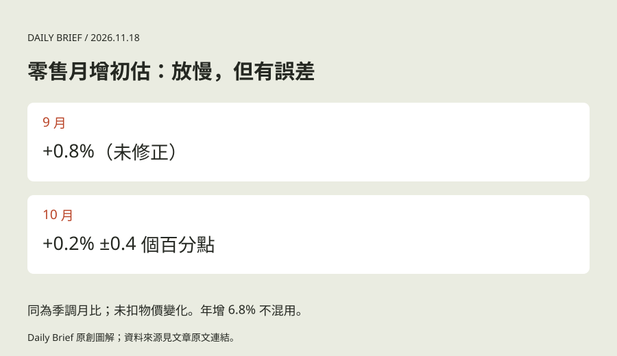

MARKETS / THE ESSENTIALS
美國 10 月零售額月增估 0.2%，不能忽略統計不確定性
收錄於 2026-11-18 日報 · 美國人口普查局零售原始發布
已確認的重點
- 美國人口普查局 11 月 17 日公布，10 月零售及餐飲銷售額估為 7,482 億美元，季調後較前月增 0.2%（±0.4%），較去年同月增 6.8%（±0.5%）。9 月月增 0.8% 維持未修正。
- 資料調整季節、假日及交易日差異，但沒有調整價格變化。因此不能把名目銷售增幅直接當成實質消費數量增幅；月比與年比也須分開。
如何理解與應對
- 月增估計小於其誤差範圍，不能僅憑 0.2% 宣稱消費確定成長或衰退。此為初估，後續仍可能修正；未取得一致市場預期，不稱超預期，也不以單項數據預言利率或股價。

原文與查核
以上為整理與解讀，重要細節請回到原文核對。
- 美國人口普查局零售原始發布 ↗發布 2026-11-17 · 查核 2026-11-18T05:07:20+08:00